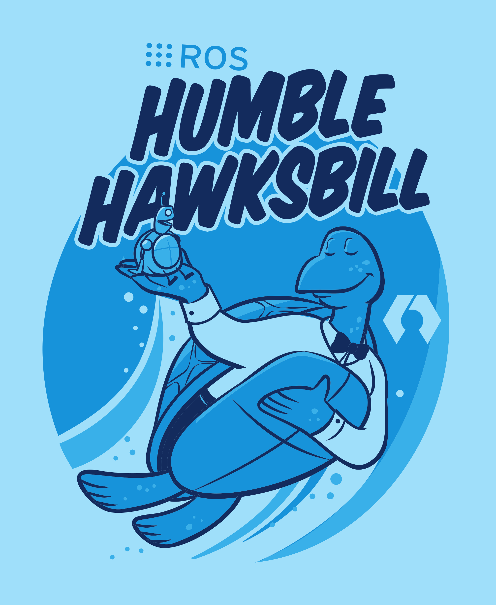
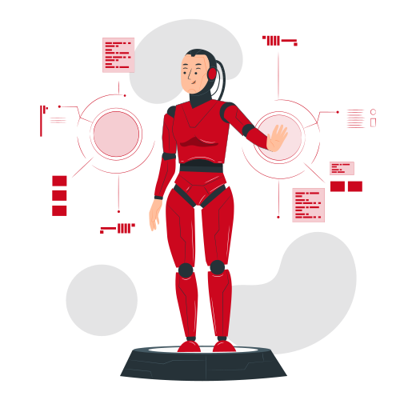

Cross-Compiling ROS 2 Humble to WebAssembly for the Development of a Web Browser Supported Robotics Environment
Isabel Paredes
Contents
Motivation
ROS 2 Limitations:
- Initial setup
- Ease of use
- Accessibility
- Reproducibility

Motivation
Existing Solutions

ROS 2
RoboStack

Docker
Robot Web Tools
Inspiration

roswasm_suite
ROS On Web
Proposed Solution
Running ROS 2 on the Browser
- Hassle-free setup
- Zero background knowledge
- Fully open-source
 WebAssembly
WebAssembly
Target Users

U1Beginner
U2Student
U3ROS User

U4Roboticist
User Interface Levels
Technical Complexity Levels
C1Middleware replacement
C2Cross-compilation of 1 package
C3Publisher and subscriber
C4Multiple nodes
C5Robot manipulation
C6ROS client libraries in JupyterLite
C7Robot visualization
C8Simulation
C9Development workspace

ROS Middleware
Data Distribution Service for Real-Time Systems (DDS)
- eProsima Fast DDS
- Eclipse Cyclone DDS
- RTI Connext DDS
- GurumDDS

Custom Middleware
Methodology
Methodology
DEMOS
ROS Topics
ROS Services
LEGO-BOOST Vernie
ROS Client Libraries: rclcpp
Conclusion
Future Work
Thank
You!
Questions?
Special Thanks to
- M.Sc. Wolf Vollprecht
- M.Sc. Markus Schmitz
Resources
Slides

Credits
- Illustrations by Storyset
Contact